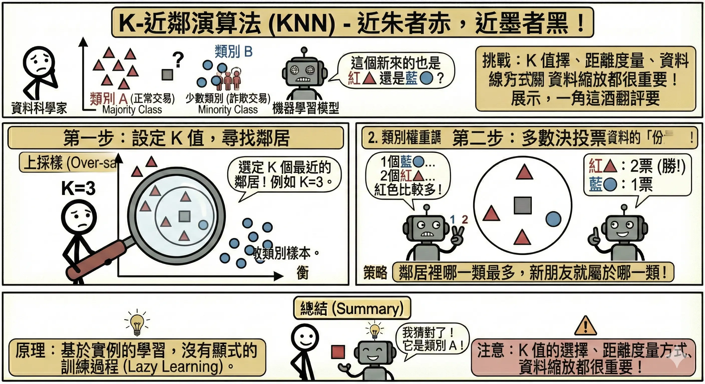
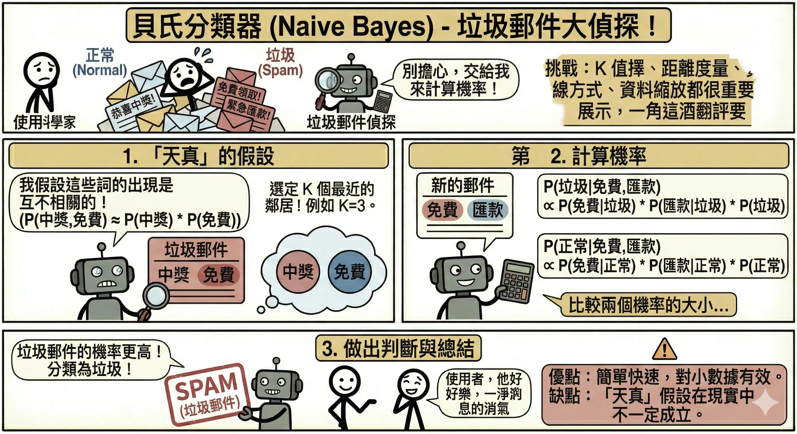
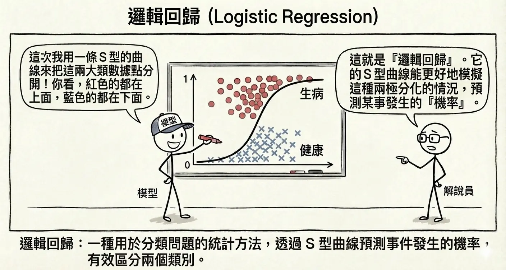
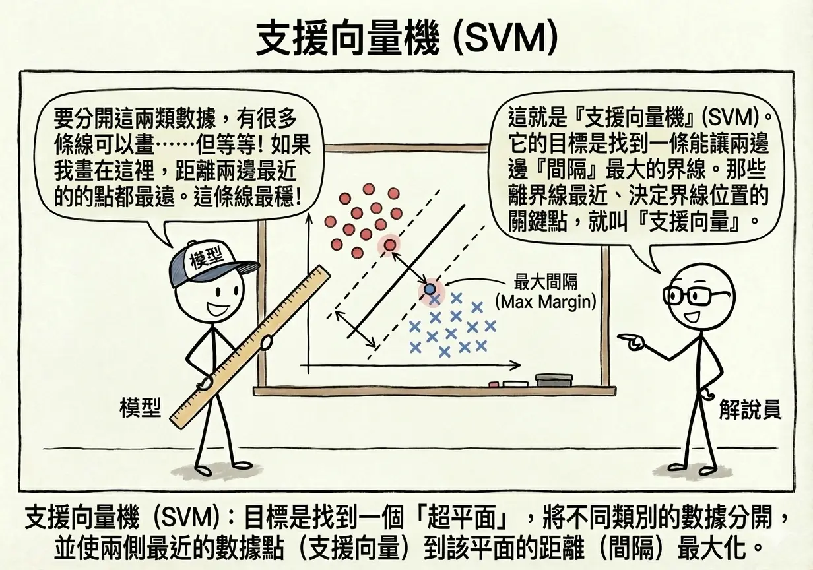
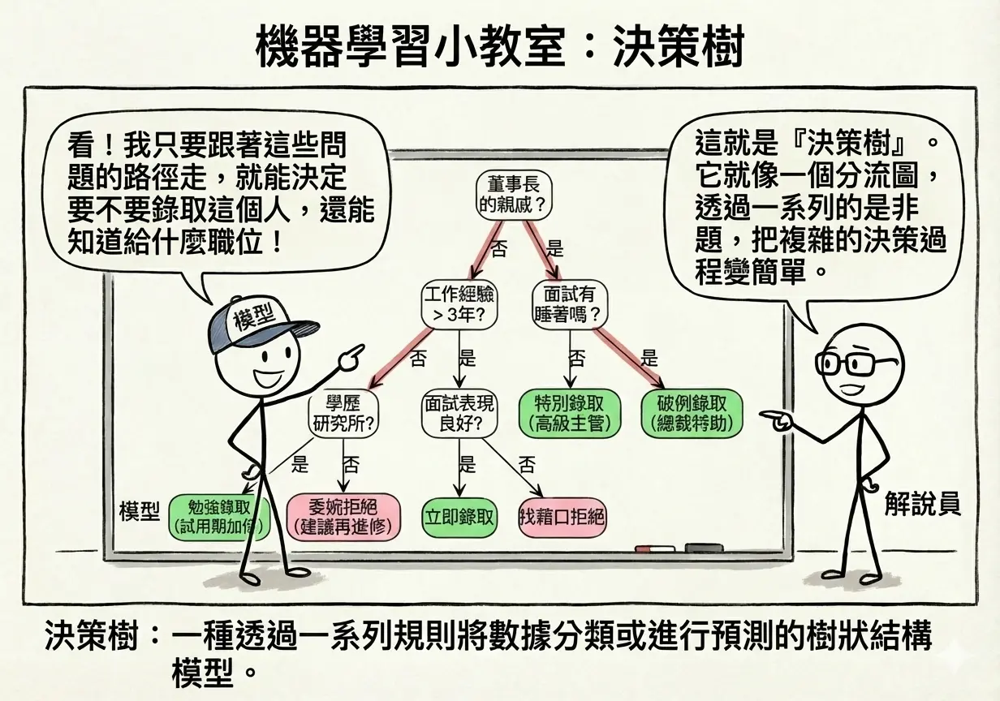
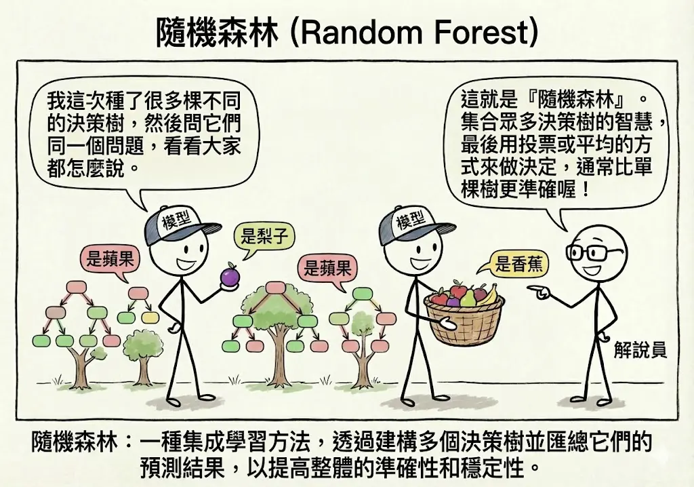
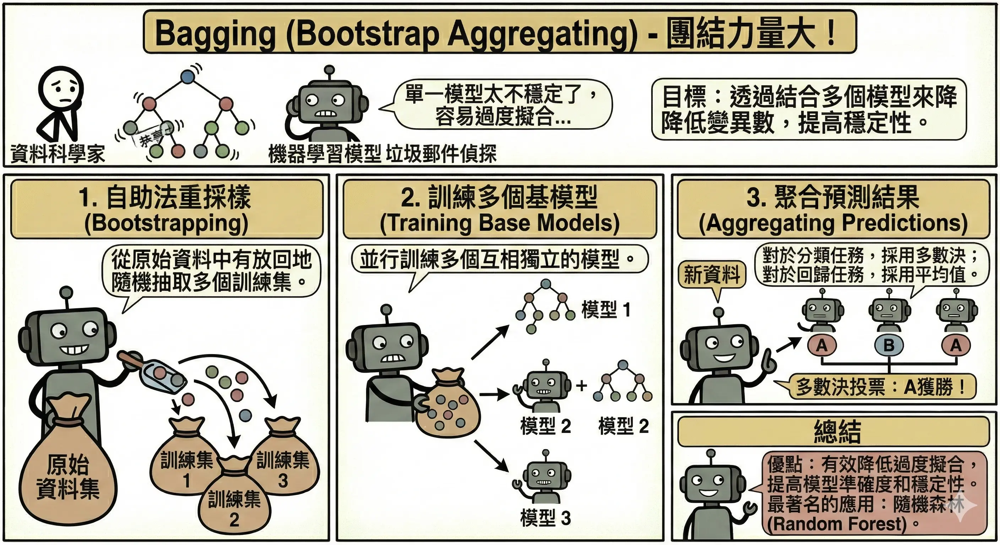
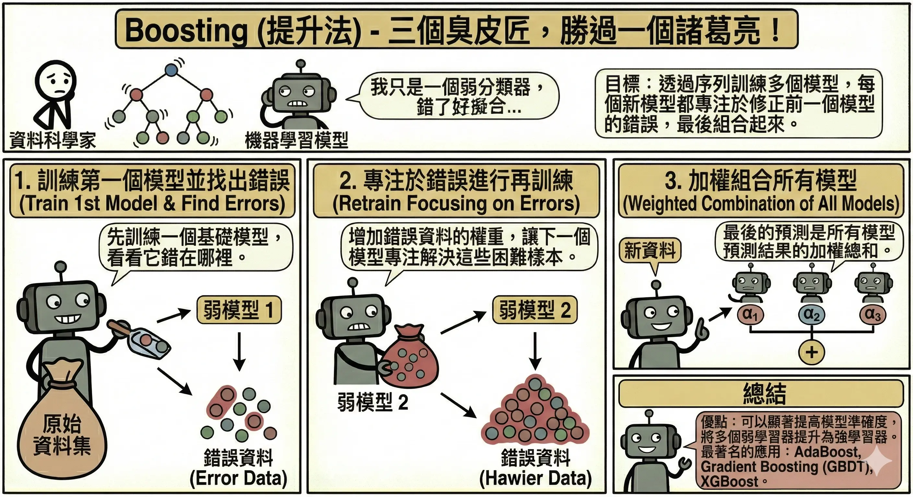
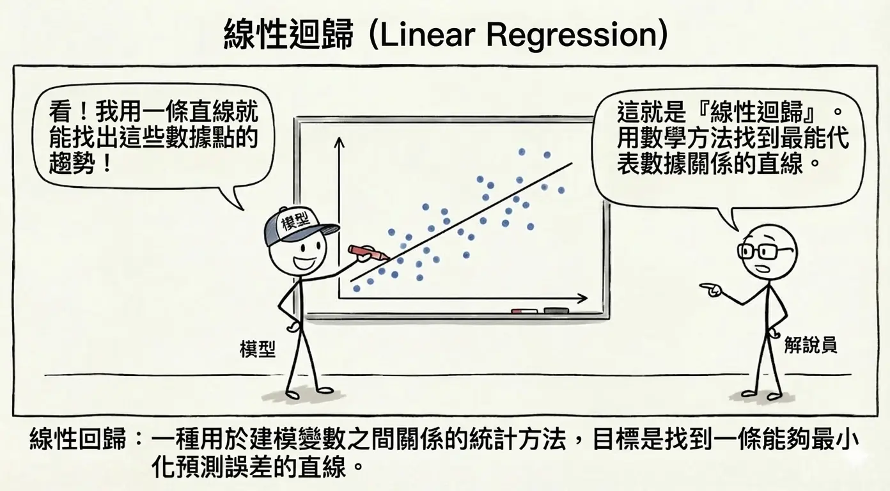
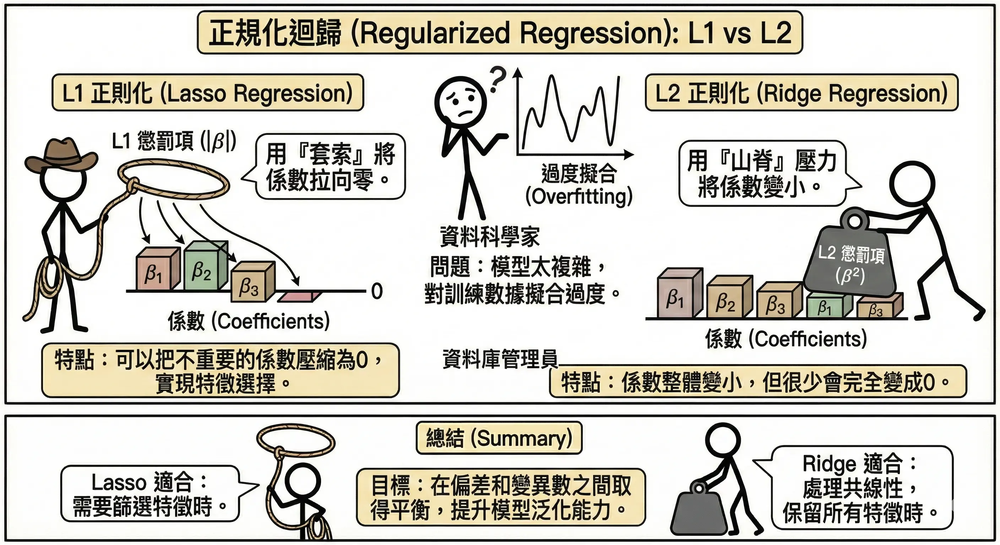

監督式學習演算法 (Supervised Learning Algorithms)
監督式學習 (Supervised Learning) 是目前 AI 應用最成熟、商業價值最高的領域。它的核心運作模式就像是人類的正規教育：老師（系統）提供大量的題目（輸入 X）和標準答案（標籤 Y），學生（模型）透過不斷練習，學會找出題目與答案之間的關聯函數 f，使得 f(X) ≈ Y。
根據目標變數 Y 的型態，監督式學習主要分為兩大類： 1. 分類 (Classification)：預測的是類別（離散值）。例如：這封信是垃圾郵件嗎？（是/否）、這張照片是貓還是狗？ 2. 迴歸 (Regression)：預測的是數值（連續值）。例如：明天的氣溫是幾度？這間房子的房價是多少？
分類演算法 (Classification)
K-近鄰演算法 (KNN, K-Nearest Neighbors)
- 核心概念：「近朱者赤，近墨者黑」。
- 運作方式：
- 當一個新的資料點出現時，算出它與現有所有資料點的距離。
- 找出距離最近的 K 個鄰居。
- 投票表決：如果這 K 個鄰居中，大多數是紅色，那這個新點就被歸類為紅色。
- 關鍵參數 K：
- K 太小（如 K=1）：容易受雜訊影響（過度擬合）。
- K 太大：容易被多數類別主導（欠擬合）。
- 優缺點：
- 優點：簡單直觀，不需要訓練過程（Lazy Learning），新資料進來直接算。
- 缺點：資料量大時，計算距離非常耗時（計算成本高）。

貝氏分類器 (Naive Bayes)
- 核心概念：基於機率統計的預測。利用貝氏定理 (Bayes’ Theorem) 計算在已知特徵下，屬於某類別的機率。
- 「樸素/天真」(Naive) 的假設：假設所有特徵之間是互相獨立的。雖然這在現實中很少見（例如「下雨」和「潮濕」通常相關），但這個假設讓計算變得非常簡單且快速。
- 應用實例：垃圾郵件過濾計算
- 假設我們有 100 封信，其中 40 封是垃圾信 (Spam)，60 封是正常信 (Ham)。
- 先驗機率 (Prior)：
- P(Spam) = 40/100 = 0.4
- P(Ham) = 60/100 = 0.6
- 似然機率 (Likelihood)：統計發現，垃圾信中有 50% 包含 “Free” 這個字，正常信中只有 5% 包含 “Free”。
- P(“Free” | Spam) = 0.5
- P(“Free” | Ham) = 0.05
- 情境：現在收到一封新信，裡面有 “Free”，它是垃圾信的機率是多少？
- 計算 (Bayes’ Theorem)： $$ P(Spam | "Free") = \frac{P("Free" | Spam) \times P(Spam)}{P("Free")} $$
- 分子 (是垃圾信且有 Free)：0.5 × 0.4 = 0.2
- 分母 (所有有 Free 的信)：
- 來自垃圾信：0.5 × 0.4 = 0.2
- 來自正常信：0.05 × 0.6 = 0.03
- 總和：0.2 + 0.03 = 0.23
- 結果：0.2/0.23 ≈ 87%
- 結論：看到 “Free”，這封信有 87% 的機率是垃圾信。
- 優缺點：
- 優點：速度極快，適合處理高維度文本資料（如 NLP）。
- 缺點：如果特徵之間高度相關，預測效果會變差。

邏輯迴歸 (Logistic Regression)
- 注意：雖然名字裡有「迴歸」，但它是經典的二元分類演算法！
- 核心概念：
- 先計算一個線性方程式 z = wX + b。
- 將 z 通過一個 Sigmoid 函數（S 型曲線），將數值壓縮到 0 到 1 之間。
- 輸出值代表「屬於正類別的機率」。
- 決策邊界：通常設定閾值為 0.5。
- 機率 > 0.5 → 判為 1 (Positive)
- 機率 < 0.5 → 判為 0 (Negative)
- 優缺點：
- 優點：可解釋性高（可以看到每個特徵的權重），計算快。
- 缺點：只能處理線性可分的問題（除非人工轉換特徵）。

支援向量機 (SVM, Support Vector Machine)
- 核心概念：試圖在不同類別的資料之間，畫出一條最寬的「馬路」（決策邊界）。
- 邊界 (Margin)：馬路兩側到最近資料點的距離。SVM 的目標是最大化邊界。
- 支援向量 (Support Vectors)：那些落在馬路邊緣、真正決定馬路怎麼畫的關鍵資料點。
- 核函數技巧 (Kernel Trick)：
- 當資料在二維平面上無法用直線分開時（例如同心圓分佈），SVM 可以利用核函數將資料投影到高維空間（例如三維）。
- 類比：桌上有紅豆和綠豆混在一起，無法用一根筷子分開。但如果你用力拍桌子，豆子彈到空中（三維），你就可以用一張紙（平面）在空中把它們切開。
- 優缺點：
- 優點：在小樣本、高維度資料上表現極佳，泛化能力強。
- 缺點：在大數據集上訓練慢，且對參數設定敏感。

決策樹 (Decision Tree)
- 核心概念：就像玩「20 個問題」遊戲。透過一系列的是非問句來對資料進行切割。
- 結構：
- 根節點 (Root)：第一個問題（例如：年齡 > 30？）。
- 內部節點 (Node)：後續的問題（例如：收入 > 5萬？）。
- 葉節點 (Leaf)：最終的分類結果（例如：會買 / 不會買）。
- 分裂準則：如何決定問什麼問題？目標是讓分出來的子群組越「純」越好。
- 熵 (Entropy) / 吉尼係數 (Gini Impurity)：衡量混亂程度的指標。
- 優缺點：
- 優點：可解釋性最強（白箱模型），畫出來的樹狀圖非專業人士也能懂。
- 缺點：容易過度擬合 (Overfitting)，變成死記硬背的學生。

隨機森林 (Random Forest)
- 核心概念：集成學習 (Ensemble Learning) 的經典代表。既然一棵決策樹容易犯錯（過度擬合），那就種一片森林，讓大家一起投票！
- 運作機制：
- 隨機採樣 (Bootstrap)：從原始資料中「有放回」地抽取 N 份樣本，每份樣本建立一棵樹。
- 特徵隨機 (Feature Randomness)：每棵樹在分裂節點時，不看所有特徵，而是隨機選取一部分特徵（例如從總共 M 個特徵中選 √M 個）來挑選最佳分裂點。這讓每棵樹長得不一樣（去關聯化）。
- 多數決 (Voting)：
- 分類：所有樹投票，票數最多的類別勝出。
- 迴歸：計算所有樹預測值的平均。
- OOB (Out-of-Bag) 誤差：由於採樣是有放回的，約有 1/3 的資料不會被某棵樹用到，這些資料可以用來驗證該樹的效能，無需另外切分驗證集。
- 優缺點：
- 優點：準確率極高，非常穩健，不易過度擬合（因為有隨機性），能處理高維度資料。
- 缺點：模型龐大（幾百棵樹），預測速度較慢，且失去了單一決策樹的可解釋性（變成了黑箱模型）。

集成學習 (Ensemble Learning)
三個臭皮匠，勝過諸葛亮。集成學習的核心思想是結合多個弱學習器 (Weak Learners) 來構建一個強學習器 (Strong Learner)。主要分為兩大流派：Bagging 與 Boosting。
Bagging (Bootstrap Aggregating)
- 口訣：「並行合作，各做各的」。
- 原理：
- Bootstrap (自助法)：從訓練資料中有放回地隨機抽取多組樣本。
- Aggregating (聚合)：每一組樣本訓練一個模型（通常是決策樹），最後透過投票（分類）或平均（迴歸）來決定結果。
- 目的：降低變異 (Variance)，解決過度擬合問題。
- 代表演算法：
- 隨機森林 (Random Forest)：
- 除了對資料取樣 (Row Subsampling)，還對特徵取樣 (Feature Subsampling)。
- 優點：準確、抗過擬合、可平行運算（速度快）。
- 缺點：模型大、黑箱。
- 隨機森林 (Random Forest)：

Boosting (提升法)
- 口訣：「循序漸進，知錯能改」。
- 原理：
- 訓練第一個模型，找出它預測錯誤的資料。
- 訓練第二個模型，專注於修正第一個模型犯錯的資料（加大權重）。
- 不斷重複，將所有模型加權組合起來。
- 目的：降低偏差 (Bias)，提升預測準確度。
- 代表演算法：
- AdaBoost：早期代表，調整資料權重。
- XGBoost / LightGBM / CatBoost：現代 Kaggle 比賽常勝軍。基於梯度提升 (Gradient Boosting)，效能極強，但參數多難調。

Bagging 與 Boosting 的關鍵差異
| 特性 | Bagging (如隨機森林) | Boosting (如 XGBoost) |
|---|---|---|
| 訓練方式 | 並行 (Parallel)：各棵樹獨立訓練，互不影響。 | 序列 (Sequential)：後面的樹依賴前面的樹（修正錯誤）。 |
| 核心目標 | 降低變異 (Variance)：透過平均多個模型來減少過度擬合。 | 降低偏差 (Bias)：透過不斷修正錯誤來提升準確度。 |
| 樣本權重 | 所有樣本權重相同。 | 錯誤樣本的權重會被放大。 |
| 對雜訊敏感度 | 較低（抗雜訊能力強）。 | 較高（容易對雜訊過度擬合）。 |
| 運算速度 | 快（可平行運算）。 | 慢（必須依序訓練）。 |
迴歸演算法 (Regression)
目標是預測一個連續的數值（如房價、銷量）。
線性迴歸 (Linear Regression)
- 核心概念：試圖畫出一條直線 y = wx + b，讓這條線盡可能靠近所有的資料點。
- 損失函數 (Loss Function)：均方誤差 (MSE, Mean Squared Error)。即計算所有點到線的距離平方和，找出讓這個誤差最小的參數 w 和 b。
- 多項式迴歸：如果資料不是直線分佈，可以用曲線（二次方、三次方等）來擬合。

正規化迴歸 (Regularized Regression)
為了防止模型過度擬合（例如用了太高次方的多項式，導致線條扭曲），我們在損失函數中加入一個「懲罰項」，強迫模型的權重 w 不要太大，保持簡單。這就像是給模型戴上「緊箍咒」，不讓它太狂野。
1. L1 正則化 (Lasso Regression)
- 全名：Least Absolute Shrinkage and Selection Operator。
- 數學公式： $$ J(w) = \underbrace{\sum_{i=1}^{n} (y_i - \hat{y}_i)^2}_{\text{原始誤差 (MSE)}} + \underbrace{\lambda \sum_{j=1}^{m} |w_j|}_{\text{L1 懲罰項}} $$
- 機制：在損失函數加入權重絕對值的總和。
- 𝝺 (Lambda) 是正則化強度。𝝺 越大，懲罰越重，越多權重會變成 0。
- 特性：傾向於讓不重要的特徵權重變成 0。
- 應用場景：特徵選擇
- 假設我們要預測房價，手上有 100 個特徵。
- 有用特徵：坪數、地點、屋齡。
- 無用特徵：屋主的星座、門牌號碼的奇偶數、當天的天氣。
- Lasso 的效果：它會發現「星座」對房價沒影響，直接把「星座」的權重砍成 0。最後模型只剩下真正重要的幾個特徵。這就是稀疏模型 (Sparse Model)。
2. L2 正則化 (Ridge Regression)
- 全名：Ridge Regression (脊迴歸)。
- 數學公式： $$ J(w) = \underbrace{\sum_{i=1}^{n} (y_i - \hat{y}_i)^2}_{\text{原始誤差 (MSE)}} + \underbrace{\lambda \sum_{j=1}^{m} w_j^2}_{\text{L2 懲罰項}} $$
- 機制：在損失函數加入權重平方的總和。
- 特性：傾向於讓所有特徵權重變小，但不會變成 0。
- 應用場景：處理共線性 (Multicollinearity)
- 假設特徵中有「坪數 (平方公尺)」和「坪數 (坪)」。這兩個特徵高度相關（幾乎一樣）。
- 一般迴歸的問題：模型可能會困惑，給其中一個巨大的正權重，另一個巨大的負權重，導致模型不穩定。
- Ridge 的效果：它會把這兩個特徵的權重都壓得很小且接近，讓模型更穩健，不會因為數據的一點小雜訊就劇烈波動。

總結比較
| 特性 | Lasso (L1) | Ridge (L2) |
|---|---|---|
| 數學懲罰 | 絕對值 | w |
| 對權重的影響 | 變成 0 | 變小 (趨近於 0) |
| 主要功能 | 特徵選擇 (排除無用特徵) | 防止過擬合 (處理共線性) |
| 幾何解釋 | 解空間是菱形 (容易切到軸上) | 解空間是圓形 |
演算法比較總結
| 演算法 | 類型 | 核心特點 | 適用情境 | 缺點 |
|---|---|---|---|---|
| KNN | 分類/迴歸 | 找鄰居，近朱者赤 | 簡單問題，資料量小 | 計算慢，對雜訊敏感 |
| Naive Bayes | 分類 | 基於機率，假設特徵獨立 | 文本分類 (NLP)，垃圾郵件 | 假設過於理想化 |
| Logistic Regression | 分類 | 線性邊界，輸出機率 | 二元分類，需要解釋權重 | 只能處理線性問題 |
| SVM | 分類/迴歸 | 最大化邊界，核函數技巧 | 小樣本，高維度，非線性 | 大數據訓練慢 |
| Decision Tree | 分類/迴歸 | 樹狀規則，若 P 則 Q | 需要解釋規則，非線性 | 容易過度擬合 |
| Random Forest | 分類/迴歸 | 多棵樹投票 (Bagging) | 高準確率需求，大數據 | 黑箱，訓練預測慢 |
| Linear Regression | 迴歸 | 擬合直線 | 預測數值，趨勢分析 | 只能處理線性關係 |
本章總結與考點提示
核心概念回顧
監督式學習是目前應用最廣泛的 AI 技術。
- 分類 (Classification)：預測類別（離散）。
- KNN：看鄰居（懶惰學習）。
- Naive Bayes：算機率（假設獨立）。
- Logistic Regression：畫線分兩邊（輸出機率）。
- SVM：畫最寬的馬路（最大化邊界）。
- Decision Tree：問問題（可解釋性高）。
- 集成學習 (Ensemble)：結合多個弱學習器。
- Bagging (如 Random Forest)：並行訓練 → 投票 → 降低變異 (Variance) → 抗過擬合。
- Boosting (如 XGBoost)：循序修正 → 加權 → 降低偏差 (Bias) → 提升準確度。
- 迴歸 (Regression)：預測數值（連續）。
- Linear Regression：畫一條線擬合。
- Lasso (L1)：特徵選擇 (權重變 0)。
- Ridge (L2)：處理共線性 (權重變小)。
AI 應用規劃師認證考點
常考題型與解題策略：
- 演算法選擇題：
- 例題：「需要向銀行監管單位解釋為何拒絕客戶貸款，應選哪個模型？」
- 解答：決策樹 (Decision Tree)。因為可解釋性最高（白箱）。避免選神經網路或隨機森林（黑箱）。
- 例題：「垃圾郵件過濾通常使用哪個演算法？」
- 解答：貝氏分類器 (Naive Bayes)。擅長處理文本特徵。
- 集成學習比較題 (Bagging vs Boosting)：
- 例題：「隨機森林屬於哪種集成技術？主要解決什麼問題？」
- 解答：Bagging；解決過度擬合 (降低 Variance)。
- 例題：「XGBoost 屬於哪種集成技術？主要解決什麼問題？」
- 解答：Boosting；解決欠擬合 (降低 Bias)。
- Lasso vs Ridge：
- 關鍵字：Lasso (L1) → 特徵選擇 (變 0)；Ridge (L2) → 處理共線性 (變小)。
記憶口訣
- KNN：「近朱者赤」。
- SVM：「楚河漢界」（畫最寬的界線）。
- 決策樹：「打破砂鍋問到底」。
- Bagging：「三個臭皮匠」（大家一起投票）。
- Boosting：「知錯能改」（修正前人的錯誤）。
延伸思考
- 為什麼邏輯迴歸 (Logistic Regression) 叫「迴歸」卻是用來做「分類」？（因為它底層是預測一個 0~1 的機率數值，只是我們設了門檻把它變成分類）。